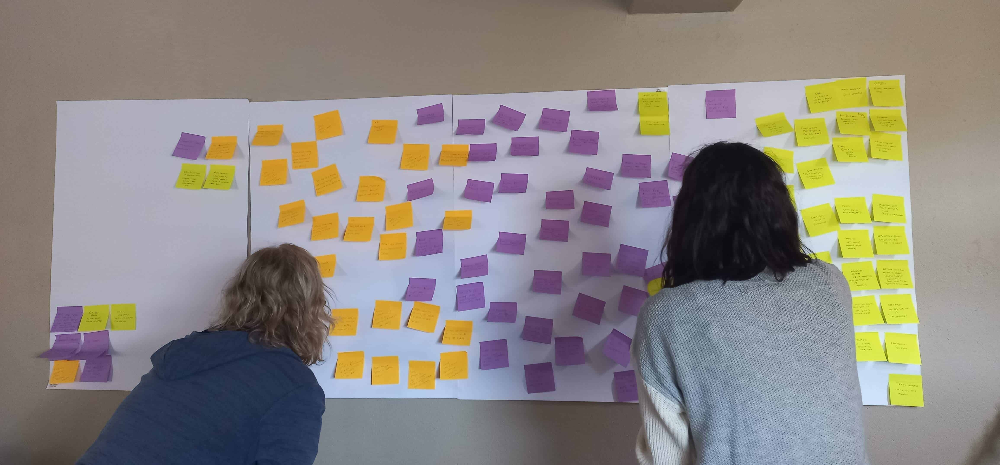
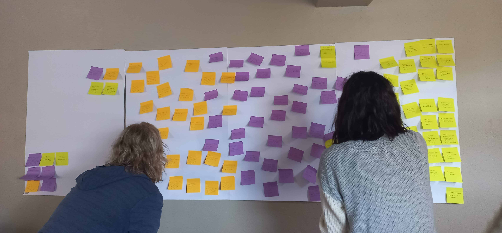

UX Review of the Airline Flight Booking Journey
Project type:
Desktop, Diploma Assignment
Project date:
November 2022 - April 2023
Tools Used:

Role:
Researcher, UX Designer
About
The goal of this project was to
review the online booking process for various websites and use this information to benefit users.
The Challenge
- Users had challenges finding instructions on selecting one of the three flight option and proceeding to the next step.
- The amount of additional steps users need to take to finalize and pay for a flight, such as having to go through the benefits page was not a fluid task for users who are price sensitive or just want to book a flight without any additional features.
- Users did find it confusing if the total amounts displayed on each page through this journey was for one passenger or total for both passengers.
- To have the opportunity to complete my first case study.
- To improve on a process that users go through often when booking a flight.
- Finding a way to be aware of consumers who are financially conscious or users who only wish to book flights without add ons when booking flights, while only recommending one feauture such as insurance. In my personal capacity and amongst discussions with a small peer group, insurance has been a feauture that many consider somewhat necessary, especially post pandemic.


 
